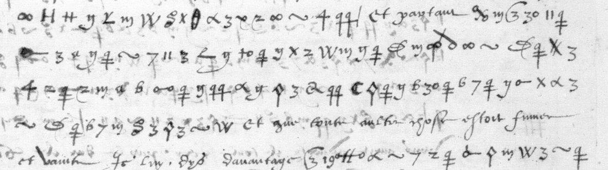

At a glanceExisting decipherment transcribed · the whole cipher passage
- The letter
- An unsigned letter to Anne de Montmorency, 1536, written outside Rome after a day in the country with a cardinal; about 20 lines of cipher inside clear text.
- Where
- Bibliothèque nationale de France, fr. 3053 ff. 85–87, DECODE R4248, catalogued with the eight “unknown sender (Rome)” letters of catalogue item 180.
- The cipher
- A substitution on graphic signs with nulls (30, a triple-barred cross, 22): Tomokiyo’s second fr. 3053 table, not the cardinal de Mâcon’s key.
- How it was deciphered
- From the contemporary clear decipherment on f. 86, checked against every clear connecting phrase left in the cipher on f. 85. The key was not applied.
- What it says
- The writer urged the cardinal that all affairs, the war above all, should go through Montmorency, “et que toute autre chose estoit fumee et vent”.
- Still open
- The writer, the cardinal (“Carafe”?), a few words of the secretary hand, and the key table.
01 The record and its cipher
DECODE files R4248 with the letters of Charles Hémard de Denonville, cardinal de Mâcon, to Montmorency in BnF fr. 3053, all catalogued with no sender. Those letters are in “Mascon’s cipher” and have their own page. This one is not: its signs are a different set, and the cardinal’s values (W = LL, ~ = null, 30 = pape) give nonsense. It is a different cipher, with its own page since 14 October 2026.
The signs match the second table Satoshi Tomokiyo sketched from this volume (nulls 30, the triple-barred cross and 22; ~ for I and J; 7 and 11 for L; W for R; 3 for O; α for U; ʃ for P), and Tomokiyo noted that the fragment on f. 85 is “deciphered on f. 86”. After the clear words et partant, the cipher ꭓ m Ɛ 3 30 11 ǂ begins JE LE CO[NSEILLOIS], as in the decipherment. The record has no date, place or signature on the DECODE images; the letter ends “Hors deux jours je seray a Rome”, and its place in the volume puts it in 1536.

02 The reading, from the decipherment on f. 86
The clear text opens: “Monsieur le cardinal Carafe [?] et moy fusmes hyer en campagne pour parler ensemble”. The legate had tried to take the writer to Rome that evening to see the Pope, and the writer asked for two days more; they talked all day, and the cardinal professed himself wholly devoted to the King’s service. Then the cipher, as f. 86 gives it:
[…] en toutes choses et particulierement celles de la guerre avoient a passer par voz mains, et partant je le conseilloie de s’adresser a faire fondement de vous seul … et que toute autre chose estoit fumee et vent. Je luy dys davantaige qu’il cognoistroit totallement le [Roy?] en ce jugement tant de la maniere de faire la guerre comme au lieu et du temps, par ce que en fin il falloit que tout homme feist son mestier et ceulx qui le font le mieulx sont les plus praticques. … Bien vous diray je que je trouve led. Sr cardinal enclin de luy mesme a suivre ce conseil, et l’ay laissé en volunté, comme il me semble en tout persuadé.
The cardinal then told him that the cardinal of Lorraine, in the capitulation he had made with the Pope, had granted things “ausquelles auparavant ilz n’avoient jamais pensé”, that they meant to undo the conditions he had passed because he had conceded more than he should, and that the whole matter would be left to Montmorency, “congnoissant ung seul fondement aux choses qui passeroient par voz mains”. The decipherment ends “Il me dist aussi” with a cue mark where the original resumes in clear. Every clear link checked on f. 85 (et partant, fumee et vent, Je luy dys davantaige, comme, car en fin il falloit, Et seroit chose trop longue de vous racompter) stands in the same place in the decipherment.
03 What remains uncertain
- A few words of the decipherment in the secretary hand: Carafe, [pouvoir?], [Roy?], partir [?], rompre [?]; about 85 % of its words were transcribed securely from the DECODE images.
- Who wrote the letter and who the cardinal was. No signature survives on the images.
- The key table: it could be rebuilt by aligning f. 85 with f. 86, since the plaintext is complete, but the reading does not need it.
04 Sources
- BnF, Français 3053, ff. 85–87: DECODE record R4248, de-crypt.org; the volume is also on Gallica btv1b90601432.
- S. Tomokiyo, “French Ciphers during the Reign of Francis I”, section “BnF fr.3053 (1535-1537)”: the second fr. 3053 table and the note that the f. 85 fragment is deciphered on f. 86.
The transcription of the decipherment and the notes are in the repository (targets/r4248/). Page images are not committed (BnF rights).